Выкуп сумок
Dior
В 97% обращений предлагаем самую высокую цену выкупа
Как выгодно продать брендовую сумку Dior в Москве?
У вас есть дорогая сумка, которую вы не носите? Хотите выгодно продать? Есть три способа это сделать. Первый — разместить объявления. Вам будут предлагать нелепые суммы, докучать звонками и просьбами прислать больше фото. Второй способ — сдать сумку в ломбард. Скупки боятся купить подделку и всегда дают низкую цену. Третий, самый выгодный способ продать люксовую сумку Dior — прийти к нам. Мы разбираемся в предметах роскоши и выкупаем их очень дорого! Вы можете получить до 90% от рыночной цены изделия.
наши преимущества
-

Выкуп за 20 минут
Работаем быстро. Проверка сумки на подлинность и оценка занимают 15-20 минут.
-

Максимальная сумма выкупа
Не занижаем цену от страха купить подделку: в штате работает эксперт международного уровня по аутентификации и реставрации сумок.
-
Все люксовые бренды
Работаем со всеми европейскими, американскими брендами, потому что можем отличить оригинал от подделки.
-
Сумки в любом состоянии
В штате работает эксперт-реставратор, поэтому мы не боимся потертостей и других дефектов.
-
Наличные в любой валюте
Деньги в нужной валюте вы получаете сразу после оценки сумки. Гарантируем полную конфиденциальность сделки.
-

Бесплатная парковка
Напротив офиса есть бесплатная парковка со свободными местами для наших клиентов. Приезжайте!
Как происходит выкуп сумок в ювелирном доме «На Фрунзенской»?
В отличие от ломбардов и скупок, мы много лет работаем в сфере ресейла предметов роскоши. Штатный эксперт по аутентификации и реставрации сумок, свыше 1000 постоянных клиентов позволяют нам давать максимальную цену выкупа.
-
01.
 Встреча
Встреча
Вы приезжаете к нам в офис. Сертификаты, чеки не нужны.
-
02.
Аутентификация сумки
В течение 15-20 минут эксперт проверит подлинность сумки в вашем присутствии.
-
03.
Выплата денег
Сразу после оценки вы получаете до 90% от стоимости вещи в любой нужной валюте.
продать сумку Dior через наш интернет-магазин
Вы можете моментально продать сумку Dior нам или воспользоваться сервисом комиссионной продажи в интернет-магазине. В этом случае сумма выкупа будет больше, как и срок продажи.
Предпродажная подготовка сумки БЕСПЛАТНО для всех, кто воспользуется услугой реализации вещи под комиссию.
реставрация сумок Dior
У нас работают лучшие мастера по реставрации сумок люксового сегмента. Они используют премиальные материалы и гарантируют качество работы.
-
SPA-уход для сумки
-
Реставрация царапин, пятен, поврежденных углов и ручек
-
Замена молний, кнопок и прочей фурнитуры
-
Восстановление цвета
Нет времени привезти сумку лично? Живете в другом городе? Воспользуйтесь нашей курьерской службой.
У нас вы можете выгодно купить или продать элитные ювелирные украшения, швейцарские часы премиальных марок, драгоценные камни, брендовые сумки, антиквариат. Мы предоставляем полный спектр услуг: оценка, выкуп, хранение и продажа предметов роскоши, экспертиза бриллиантов, обслуживание и ремонт часов.
Готовим изделия для участия в аукционах Sotheby’s, Christie’s и Phillips. Помогаем с поиском эксклюзивных часов, драгоценных камней по спецзаказу на крупнейших мировых биржах. Собственная геммологическая лаборатория, часовая мастерская позволяют проводить точную и быструю оценку изделия любой сложности. В отличие от ломбардов, мы не занижаем стоимость, а выдаем до 90% рыночной цены. Гарантируем строгую конфиденциальность и безопасность сделки.
онлайн-оценка
Оставьте заявку на оценку ваших изделий и наш специалист свяжется с вами в ближайшее время
о бренде Dior
Сумки Dior за десятилетия меняли размеры, формы и материал. Но есть черты, которые их объединяют: подвески с логотипом бренда, стеганая кожа, плавные линии и всегда мягкие премиальные материалы. Стать обладательницей такой сумки мечтает каждая модница.
-
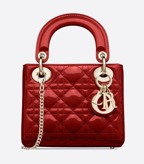
Lady Dior. Первое название Chouchou. Волей судьбы сумка попала в руки иконы стиля тех лет принцессы Дианы. Говорят, ей так понравилась сумочка, что она заказала модель во всех цветах и размерах. Lady Dior отличается пастельными оттенками, практически отсутствием декора и элегантностью.
-
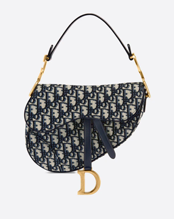
Dior Saddle. Она же сумка-седло. Благодаря необычному стилю, быстро стала успешной. Модель встречается в сериале «Секс в большом городе» и по-прежнему остается знаковой для модного дома.
-
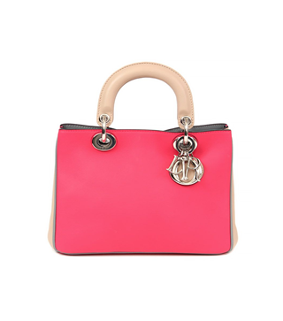
Diorissimo. Линейка сумок в форме трапеции. Чаще всего, они выполнены из кожи крокодила.
-
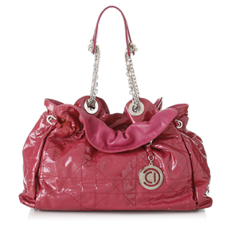
Dior Le 30. Хит среди сумок, подходящий на каждый день. Модель изготавливается в одном размере.
-
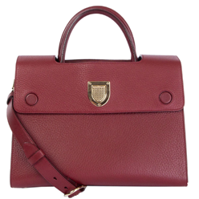
Dior Diorever. По словам модного бренда, сумка для женщин с сильным и независимым характером.
-
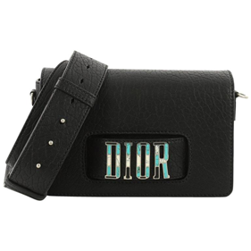
Dior (R)evolution. Небольшая современная модель. Впервые бренд разместил большие буквы лого на передней части сумки.
-
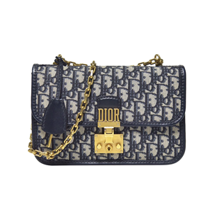
Dioraddict. Модель выпущена в память винтажных чемоданов бренда. Самая популярная – сумочка с клапаном.
-
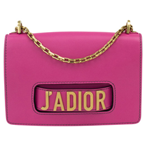
Сумка J'adior. Модель с клапаном, которая отличается от классических женских сумок модного дома. Используется игра слов во французском языке.
-
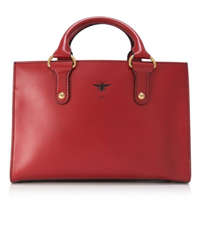
D-Bee. Впервые на сумках Dior появилась пчела. Причем насекомое можно встретить как в мужской, так и в женской коллекции.
-
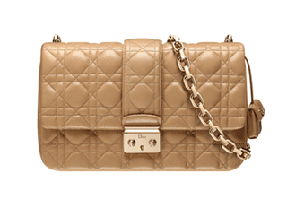
Miss Dior. Самая маленькая из всех сумочек Dior. Главный акцент – цепочка-ремешок из металла. Выпускается в шести цветах, причем есть как классический черный вариант, так и оригинальный вязаный.
-
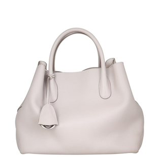
Open bar. Линейка сумок в стиле модного жакета Bar Dior. Отличное решение на каждый день.
Ювелирный дом «На Фрунзенской» поможет продать и приобрести люксовые сумки Dior. Принимаем изделия в любом состоянии. Сертификаты, чеки не нужны. Предлагаем самую выгодную цену!
Комсомольский проспект дом 42 строение 1
Режим работы: 09:00-21:00 без выходных.
Для согласования более позднего времени визита,
пожалуйста, записывайтесь заранее.